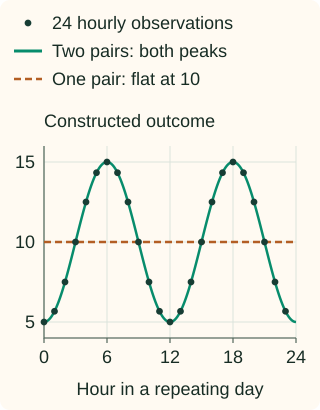

Cyclical Encoding (sin/cos)
At 23:00, midnight is one hour away. As ordinary numbers, however, 23 and 0 are 23 units apart. Cyclical encoding represents position within a repeating cycle so the end meets the beginning.
It is useful for a known cycle such as hour of day or day of week. It does not make arbitrary categories cyclical, and it does not represent elapsed time across different days.
Put the hours around a circle
Place midnight at the top and advance clockwise through a 24-hour day. Use the point’s horizontal and vertical coordinates as two input features. Nearby hours have nearby coordinates, including the pair 23:00 and 00:00.
Turn a position into an angle, then two coordinates
Let $x$ be the position in the cycle, $P$ its period, and $o$ the position chosen as the start. For hours, use $P=24$ and $o=0$. A fraction $(x-o)/P$ of one cycle corresponds to that fraction of a full turn, which is $2\pi$ radians:
The outputs are two separate model columns. Hour 0 gives [0, 1]; hour 6 gives [1, 0]. Hour 24 returns to [0, 1], because it is the same phase on the next day.
Why use both sine and cosine?
Sine alone gives the same value to different positions. Hours 2 and 10 both have sine 0.5. Their cosine values are approximately +0.866 and −0.866, so the pair distinguishes them. Together, the two coordinates identify a phase within one cycle.
This pair also satisfies $x_{\sin}^2+x_{\cos}^2=1$: valid encoded positions lie on the unit circle. Euclidean distance between two such points reflects their shorter separation around the cycle. It is a chord length, not a replacement for actual time differences in hours.
Choose the period from the task, not the observed maximum
Hours 0 through 23 have period 24, not 23. Setting the period to 23 would place hour 23 on top of hour 0, incorrectly making two different hours identical. A training sample containing only working hours still uses the daily period of 24.
| Feature | Position convention | Period |
|---|---|---|
| Hour of day | 0 through 23, or fractional hours | 24 |
| Day of week | Monday = 0 through Sunday = 6 | 7 |
| Month of year | January = 0 through December = 11 | 12 |
For months numbered 1 through 12, use origin 1 to match this table. Shifting the origin rotates the circle; it does not change distances when both coordinates are retained. Preserve the same origin and feature order at prediction time.
Encode known cycles without fitting a vocabulary
The period and origin are fixed here, so there are no data-derived statistics to fit. The implementation wraps values into one cycle before applying sine and cosine. It rejects missing inputs so midnight is never silently used as a missing-value substitute.
Python: hours before and after midnight
import numpy as np
def encode_cycle(values, period, origin=0.0):
values = np.asarray(values, dtype=float)
if not np.isfinite(period) or period <= 0 or not np.isfinite(origin):
raise ValueError("use a positive finite period and finite origin")
if not np.isfinite(values).all():
raise ValueError("handle missing or invalid inputs first")
phase = np.remainder(values - origin, period) / period
angle = 2 * np.pi * phase
return np.column_stack([np.sin(angle), np.cos(angle)])
encoded = encode_cycle([23, 0, 1, 24], period=24)
print(encoded.round(3).tolist())
assert np.allclose(encoded[1], encoded[3]) # Hour 24 wraps to hour 0.
assert np.allclose((encoded ** 2).sum(axis=1), 1)
assert np.allclose(encode_cycle([-1], 24), encode_cycle([23], 24))
[[-0.259, 0.966], [0.0, 1.0], [0.259, 0.966], [0.0, 1.0]]Negative positions are also meaningful under this arithmetic: −1 hour has the same phase as hour 23. Deciding whether such an input is valid belongs to your data schema; wrapping should not hide invalid source data.
A circular input does not guarantee a flexible daily pattern
A linear model with one sine/cosine pair can learn one smooth wave per cycle, with an adjustable height and phase. It cannot fit every possible hourly pattern. Two separated demand peaks, for example, may require more flexibility.

What is a second harmonic?
The first pair uses angle $\theta$. Adding $\sin(2\theta)$ and $\cos(2\theta)$ lets a linear model also represent a wave that repeats twice per original cycle. The figure’s constructed outcome is $10-5\cos(2\theta)$, so the added cosine can represent it exactly.
More harmonics add finer patterns and more parameters. A nonlinear model may represent complex patterns from the original pair, and periodic splines provide another smooth representation. See the periodic-spline example for a worked alternative. Choose flexibility through validation rather than adding harmonics indefinitely.
Keep the calendar information the task still needs
Hour-of-day encoding deliberately maps every midnight to the same coordinates. It loses which day it is. Retain a separate date or elapsed-time feature for long-term trends, and add weekday or holiday information when behavior depends on the calendar.
Use the clock appropriate to the behavior you are modeling, such as local hour for a local daily routine. Local clock phase and elapsed duration differ around daylight-saving changes; keep an actual timestamp when duration matters. Month positions also treat months as equally spaced categories, not equal-duration intervals.
Separate hour and weekday pairs in a linear model give additive effects. They do not automatically express a different hourly profile on weekends; that requires interactions or a suitable nonlinear model. Likewise, a cycle suggests proximity across its boundary, but whether that proximity helps prediction is an empirical question.
Evaluate future-facing tasks with chronological splits. A deterministic encoding prevents no leakage in other features or in the split itself. Handle missing timestamps deliberately through the missing-data workflow.
C++: the same period and coordinate order
The result is sine first, cosine second. The remainder adjustment makes negative offsets wrap consistently with the Python example.
Compile the cycle transform
#include <array>
#include <cmath>
#include <iomanip>
#include <iostream>
#include <stdexcept>
std::array<double, 2> encode_cycle(double value, double period,
double origin = 0.0) {
if (!std::isfinite(value) || !std::isfinite(period) ||
!std::isfinite(origin) || period <= 0)
throw std::invalid_argument("invalid cycle input");
double offset = std::fmod(value - origin, period);
if (offset < 0) offset += period;
const double angle = 2 * std::acos(-1.0) * offset / period;
return {std::sin(angle), std::cos(angle)};
}
int main() {
std::cout << std::fixed << std::setprecision(3);
for (double hour : {23, 0, 1, 24}) {
const auto pair = encode_cycle(hour, 24);
std::cout << hour << ": " << pair[0] << ", " << pair[1] << "\n";
}
}
23.000: -0.259, 0.966
0.000: 0.000, 1.000
1.000: 0.259, 0.966
24.000: 0.000, 1.000References and further reading
- Scikit-learn: time-related feature engineering — sine/cosine pairs, model flexibility, and periodic splines evaluated on a time-based split.
- NumPy: sine — radian-valued inputs and the numerical operation used in the transform.
- NumPy: remainder — wrapping positions into a cycle, including negative inputs.